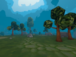

How Megabonk works



Megabonk is a 3D roguelike survival game in the "bullet heaven" style. You pick a character and run around a generated map while your weapons attack on their own. Enemies pour in, killing them gives XP and gold, and every level-up lets you pick an upgrade. A run lasts until you die or beat the final boss, and your score is mostly how many enemies you killed.
This page is the big picture. The other pages have the exact numbers.
The goal of a run
- Survive each stage's timer while getting stronger. Each stage is a fixed-length script of waves, swarms and minibosses (10:00, 9:00 and 8:00 on Forest and Desert; one 16:00 stage on Graveyard).
- Kill the stage boss. Killing it, or letting the timer run out, starts the final swarm: an endless flood of ghosts that gets tougher every minute.
- Take the portal to the next stage. Your tier decides how many stages you play: Tier 1 is one stage, Tier 2 two, Tier 3 three.
- Beat the final boss. After the tier's last stage comes the final-boss map: Ent on Forest, Pharaoh on Desert, Ghost King on Graveyard.
You choose when to leave each stage. Staying in a final swarm longer means more kills and more XP, but the swarm's enemies get 4× more HP and 2× more damage every minute. That trade-off is what most high-score play is about (Maxing a run).
The core loop
| You do | You get |
|---|---|
| Kill enemies | XP, gold, sometimes powerups |
| Level up | A choice of upgrades: a new weapon, a weapon upgrade, a new tome, a tome level, or a stat |
| Spend gold on chests | A random item (Common, Rare, Epic or Legendary) |
| Use shrines | Stat offers, items, curses, challenges |
| Break pots | Gold and, on stage 1, permanent Luck |
Four kinds of power stack together:
- Weapons (4 slots) attack automatically and level up through offers. See Weapons.
- Tomes (4 slots) each raise one stat per level: damage, attack speed, size, Luck, XP and so on. See Tomes.
- Items come from chests, shrines and vendors, and there's no slot limit. Most stack: 10 copies do 10 times as much, or less where the code adds diminishing returns. See Items.
- Stat offers from level-ups and Charge Shrines add straight to your stats.
All four feed the same stat sheet, and the Core math page shows exactly how they combine.
What makes it different
- It's fully 3D. You move, jump and fall across hilly terrain, and your stats include jump height, extra jumps, slam and fall-damage reduction. Terrain matters for dodging and for reaching shrines and chests.
- Items stack without limit. Most survivor games cap items; here 30 copies of one item is normal in a long run, and crit chance past 100% "overcrits" for ×4, ×6.25 and more.
- Difficulty is a stat you choose to raise. The Cursed Tome, Boss Curses and some items raise it. More Difficulty means tougher enemies, but also more of them and faster swarm refills, so more kills.
- Luck runs the economy. It decides the rarity of every level-up offer and chest. A run's first stage is largely about getting Luck high before spending gold.
- The final swarm is an open-ended score chase. It has no time limit, and leaving early is a choice.
Characters
Each character starts with one weapon and has a passive that grows with level. Dicehead, for example, gets a free random stat (Gamba) every level-up. Characters also have different base stats. See Characters.
How maps are generated
Every run builds a new map from a random seed. The terrain and the placement of everything on it change each time, but the amounts are fixed by the code (SpawnInteractables, RandomObjectPlacer):
| Per stage | Forest / Desert | Graveyard |
|---|---|---|
| Chests | 46 | 69 |
| Shrine slots, each a random type (Shady Guy, Moai, Boss Curse, Magnet, Challenge; Bald Heads on Graveyard) | 14 | 28 |
| Charge Shrines | 15 | 22 |
| Greed Shrines | 8 | 12 |
| Pots | 55 | ~105 |
| Microwaves | 1–2 | 4–8 |
So two maps always have the same number of chests and shrine slots, but one might have six Shady Guys and no Moai while the next has the reverse. Some things are rolled when the map loads and never change: each Shady Guy's and Microwave's rarity, for example. That's why seed scanning (rerolling maps until a good one shows up) works. The full limits are on FAQ & map limits.
The three maps:
- Forest: the starting map. Goblins, slimes, bees and golems; three stages; the Ent as final boss.
- Desert: mummies, scorpions and skeletons, plus sandstorms and Desert Graves (summon fights); three stages; the Pharaoh as final boss.
- Graveyard: one long 16-minute stage that always uses Tier 3 enemy strength. It has twice the shrines, Bald Heads (Balance Shrines), coffins with ghost bosses, gravestones, and a crypt with extra chests. Its final boss is the Ghost King.
Stage scripts, spawn rates and enemy stats are on Maps & stages and Enemies.
How enemies get stronger
Enemies scale on three clocks:
- The whole run: +10% HP and +2.8% damage per minute. This never resets.
- The stage: stage 2 enemies start at about 30× base HP, stage 3 at about 150×.
- The final swarm: HP ×4 and damage ×2 every minute. This resets each stage.
Difficulty and your tier multiply all of it. That's why a build that was overkill on stage 1 can stall on stage 3, and why the final swarm always ends a run sooner or later.
Between runs
Silver earned in runs and quests (achievements) unlock new characters, weapons, items and tomes. You can also toggle items out of the pool, so chests only roll what you want. This wiki skips unlock details and focuses on how things work once you have them.